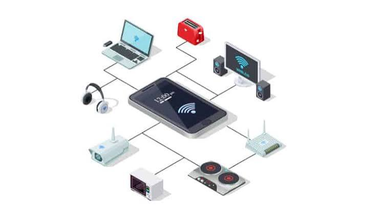

Internet
The internet connection reaches your home through a wired or wireless connection provided by your Internet Service Provider.
Discover how the internet reaches your device without wires!
Understanding the technology behind wireless connectivity

Wi-Fi is a technology that allows electronic devices to communicate wirelessly using radio waves.
It allows devices such as smartphones, laptops, tablets and smart TVs to connect to a network without using a physical cable.
A typical Wi-Fi network uses a wireless router or access point to communicate with connected devices.
Three important stages make wireless communication possible

The internet connection reaches your home through a wired or wireless connection provided by your Internet Service Provider.
The router communicates with nearby devices using wireless radio signals.
Your phone or computer receives the wireless signals and sends data back to the router.
Follow the path of information from the internet to your device
The invisible signals that make wireless communication possible

Wi-Fi uses radio waves to transmit information through the air.
Radio waves are a type of electromagnetic radiation. They can travel through space without needing a physical wire.
The router and your device contain antennas that send and receive these wireless signals.
What happens when you open a website or watch a video?
| Step | What Happens? |
|---|---|
| 01 | Your device requests information from the network. |
| 02 | The request is sent to the Wi-Fi router using radio waves. |
| 03 | The router communicates with the internet. |
| 04 | The requested information is sent back to your device. |
Some factors can affect the strength and speed of wireless signals
Wi-Fi signals can become weaker as the distance from the router increases.
Walls and other physical objects can block or weaken wireless signals.
Other wireless devices and networks can interfere with Wi-Fi performance.
Wi-Fi has become an important part of our everyday lives
An interesting fact about wireless connectivity
Wi-Fi does not mean that your device is directly connected to the internet through the air.
Instead, Wi-Fi provides a wireless connection between your device and a local network. The router can then connect that network to the internet.